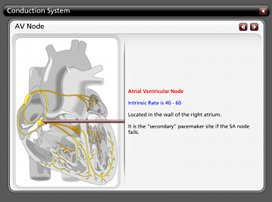

Emergency Medical Services
Training Project
"Therefore in medicine we ought to know
the causes of sickness and health."
Avicenna

- Menu
- EMS Medical Training
- Cardiology Review
- ECG Workbook
- Lesson Plans
- Public Training
- TQM for Emergency Services
- SRCSA
- Resources
- Learning Content Management Systems
- Authoring Tools
- Wiki
- Forums
- Store
- Projects
- Agency Personnel & Training Database
- eBook Writer
- EMS Training
- PAD Program Manager
- Tickets CAD
- TQM for Emergency Services

Use as Stand-alone Projects or with a Learning Content Management System such as Moodle
To use these programs unzip them into a common folder and click the engage.html link. Please let us know if you find any errors in the programs.
As with any medical software or text, you are responsible to assure the information is in line with your local protocols.
|
Cardiac Anatomy Our first release in this series in a review of the anatomy of the heart. The presentation displays the components of the heart and shows where they are located. This review is appropriate for both Basic Life Support providers as well as Advanced Life Support providers. |
|
|
Cardiac Conduction System This project takes through the entire conduction system of the heart, starting with the SinoAtrial (SA) Node and traveling down through the conduction system. This review is appropriate for Advanced Life Support providers. |
 |
|
ACLS Pharmacology Review This project offers a thorough review of all of the medications discussed in the American Heart Association's Advanced Cardiac Life Support (ACLS) course. This review is appropriate for Advanced Life Support providers. |
Welcome Aboard Jim Keiken
Our Latest Member & Contributor of This Series
This series of training modules was created by Jim Keiken. Jim is the Assistant Chief of Personnel, Planning and Training for the City of Madison (WI) Fire Department. He has been in the fire service for over 29 years and with the City of Madison for the past 19 years. Jim is also the program manager for the department's Moodle online learning project, Video conferencing system, data & GIS analysis and is the management liaison with Firefighters Local 311.
Jim has a Bachelors degree in Fire Science Management from Southern Illinois University, a Masters of Science in Management from Cardinal Strich University and is completing a certificate in Distance Education from the University of Wisconsin - Madison.
Jim is a Wisconsin Licensed Paramedic and has been a Fire Service & EMS educator for over 20 years. He is a past member of the Wisconsin's EMS Boards Education sub committee and EMS for Children's committee and is currently the Chair for the Wisconsin Trauma Society.
We are very proud to have Jim as a member of the Open ISES Project. His knowledge and expertise is a very welcome addition to our network of educational projects.
21 February 2010